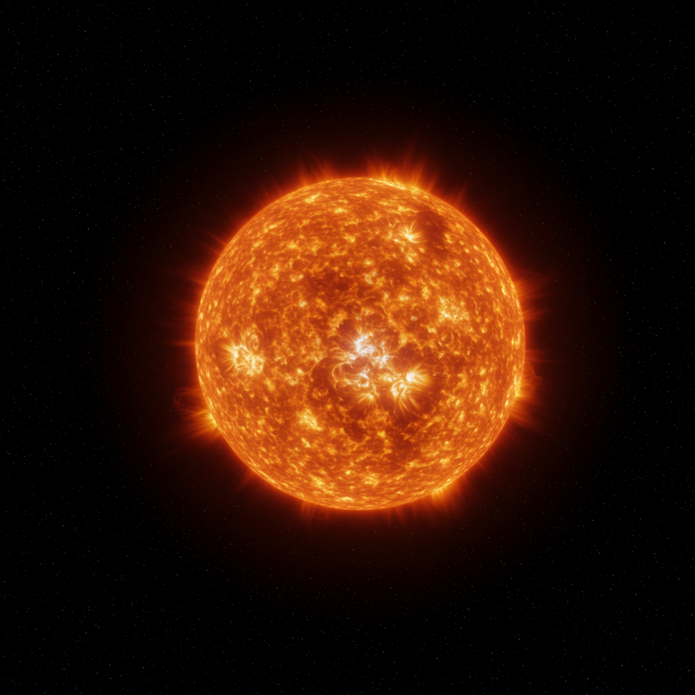
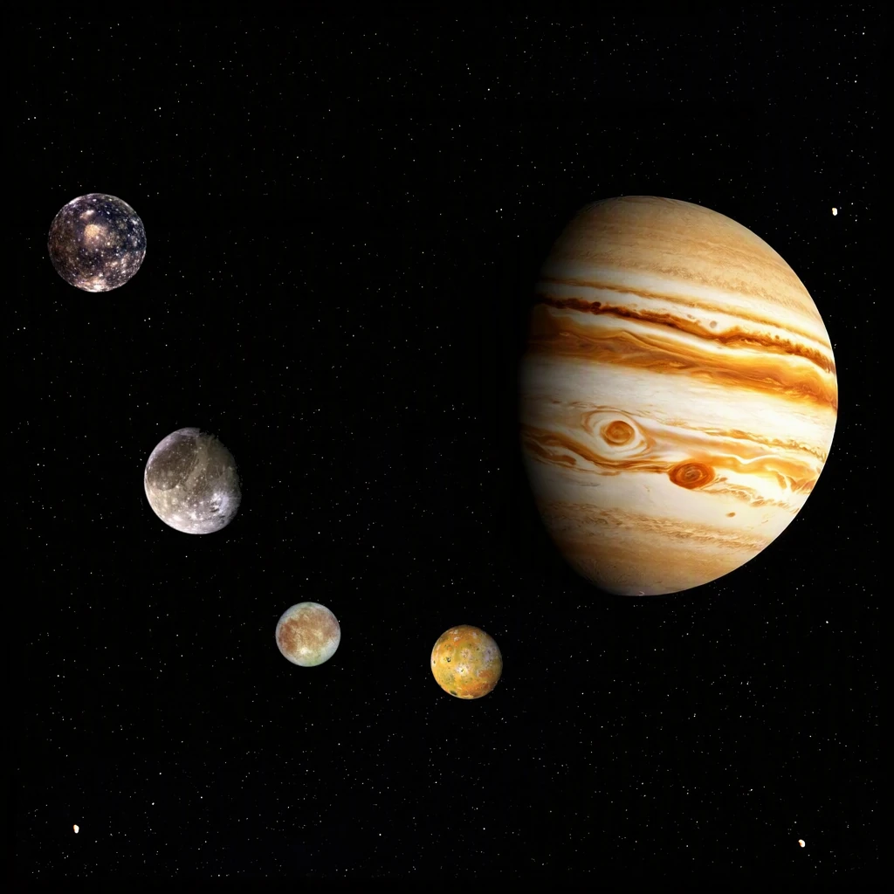
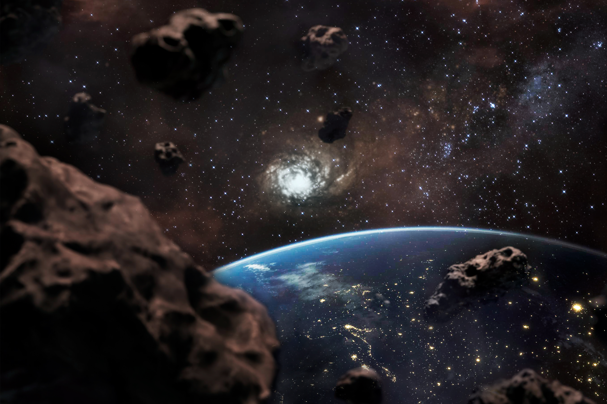
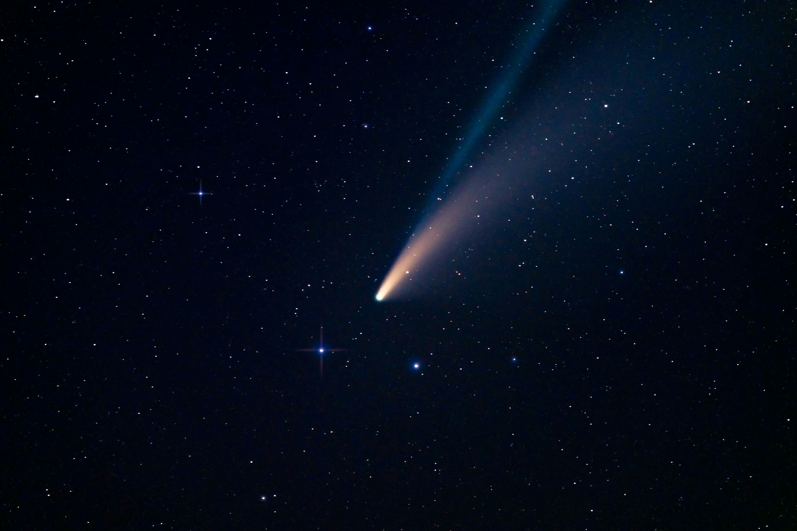
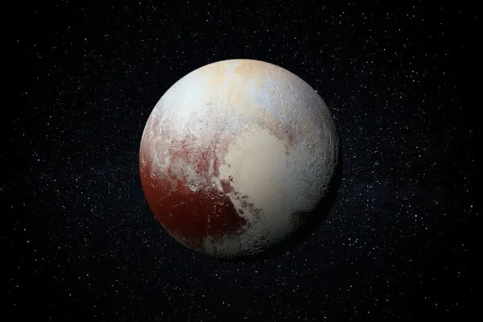
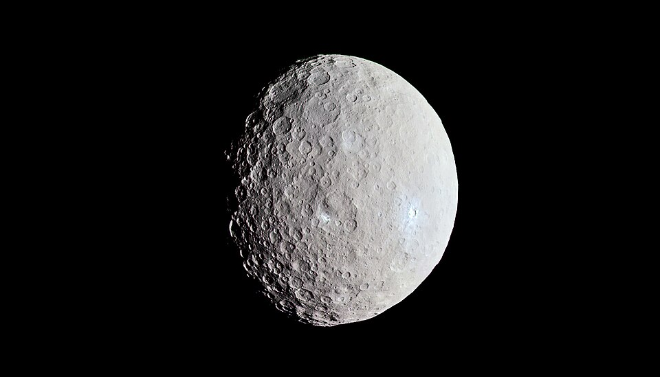
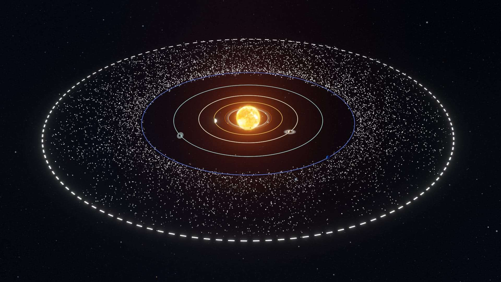
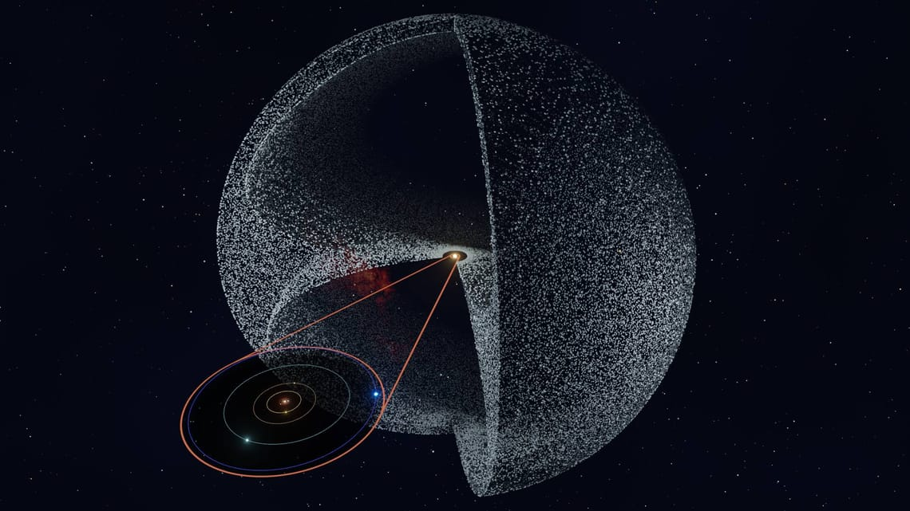

ESTRELA
Sol
Concentra cerca de 99,86% de toda a massa do Sistema Solar e fornece luz e calor aos planetas.
Idade aproximada
4,6 bilhões de anos
O Sistema Solar não é feito só de planetas. Ele também tem uma estrela, luas, asteroides, cometas, planetas anões e regiões distantes cheias de corpos gelados.

ESTRELA
Concentra cerca de 99,86% de toda a massa do Sistema Solar e fornece luz e calor aos planetas.

SATÉLITES NATURAIS
Corpos que orbitam planetas. Mercúrio e Vênus são os únicos planetas sem nenhuma lua.

CORPOS MENORES
Restos rochosos da formação do Sistema Solar. A maioria deles fica em um cinturão.

CORPOS MENORES
Feitos de gelo, poeira e rocha. Ao se aproximar do Sol, desenvolvem uma cauda brilhante.

PLANETA-ANÃO
Foi considerado o nono planeta até 2006, quando passou a ser classificado como planeta anão.

PLANETA-ANÃO
O maior objeto do cinturão de asteroides e o único planeta-anão dessa região.

REGIÃO DISTANTE
Fica além de Netuno e abriga muitos corpos gelados, incluindo Plutão. 1 UA é a distância Terra–Sol.

REGIÃO DISTANTE
Seria uma enorme casca de corpos gelados, de onde viriam os cometas de período muito longo.